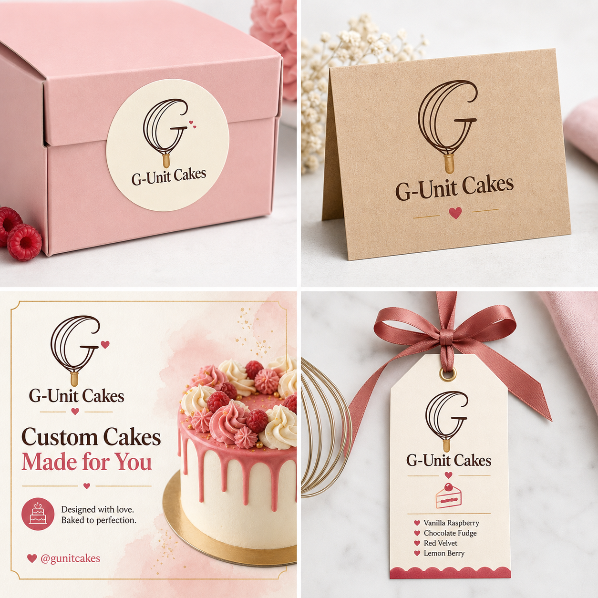
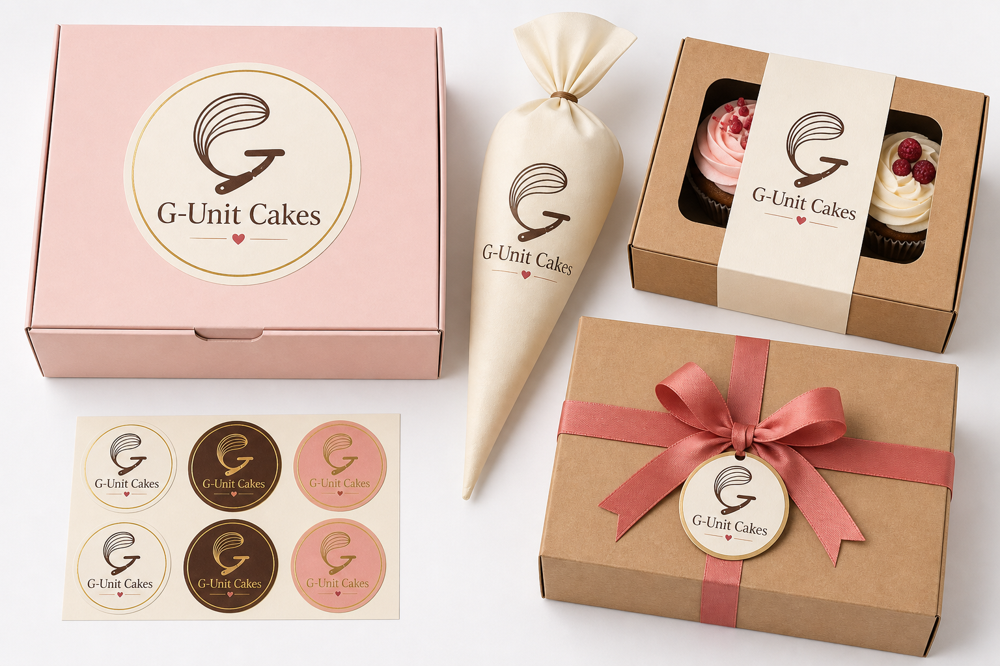

01
Occasion-led demand
Birthdays, baby showers, weddings, graduations, and office celebrations all need a visual centerpiece.
Brand + website pitch
Owner-baked celebration cakes
A boutique bakery presence built around a memorable whisk-G logo, easy ordering, and packaging people want to post.
G-Unit Cakes pitch deck
The opportunity
Birthdays, baby showers, weddings, graduations, and office celebrations all need a visual centerpiece.
Customers want colors, themes, names, flavors, and sizes tailored to their exact event.
A beautiful cake and branded box become shareable content before the first review is written.
Brand idea
The mark is simple enough for stickers, stamps, cake toppers, social avatars, and packaging, while still feeling ownable and connected to baking.
Website concept
Advertise cakes + capture order intent
Visitors see the brand, browse starter cake styles, describe custom orders, then copy or send their order details to the owner.
Cake offer
Starter menu for faster decisions
Vanilla raspberry, Swiss meringue, berry drip, and bright event-ready styling.
Chocolate fudge, ganache finish, rich cocoa tones, and gold detail for premium orders.
Lemon sponge, cream cheese, soft floral piping, and gentle pastel presentation.
Special orders
It turns vague messages like “How much is a cake?” into useful briefs the owner can quote quickly.
Date, servings, occasion, and delivery area.
Flavor, budget, colors, theme, and wording.
Copy summary now, connect WhatsApp auto-send later.
Social plan
Links to connect when details are ready
Finished cakes, reels, customer reactions, behind-the-scenes piping, and seasonal launches.
Pre-filled messages from the order form reduce back-and-forth and make quoting easier.
Time-lapse decorating, flavor reveals, packaging moments, and event-day delivery clips.
Mockups
Products + social post
It can scale from a small seal on a cake box to a full campaign post promoting custom cakes.

Packaging
Box, sticker, bag, sleeve, ribbon

Branded boxes and stickers help the cake feel premium at handoff, while encouraging customers to photograph and share the order.
Launch plan
What we need next
Refine the whisk-G logo, final colors, and wordmark into a clean production version.
Instagram, WhatsApp, TikTok, owner name, service area, pricing, and ordering terms.
Use real baked cakes, customer packaging shots, and short videos for trust and conversion.
The pitch
Ready for links, prices, and real cake photos